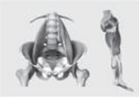

名称
性别
身高
年龄
体重
手机
日期
骨骼肌运动损伤风险报告
综合评估(Table)
运动控制
柔软性
稳定性
左右平衡
膝关节疼痛
腰部疼痛
颈肩疼痛
分数
Bad
Bad
Bad
348
No
Yes
No
11/24
评估分析(Analysis)
肩部 14%
Bad
颈部 14%
Bad
运动控制
14%
Bad
胸椎活动度
14%
Bad
核心
14%
Bad
髋关节/下肢
14%
Bad

脊柱，肩部损伤可能性比较大
平时注意脊椎的柔软性以及肩部的稳定性训练
综合分数
189